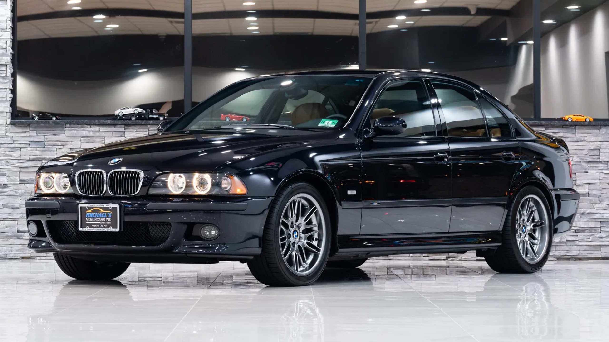

Alibaba, Cheap Easy and Quick...


Kompletny zderzak przedni M-Pakiet / M5 Design do BMW E39. Idealny sposób na odświeżenie wyglądu Twojego auta i nadanie mu agresywnego, sportowego charakteru.
Specyfikacja produktu:

Wizualny tuning, który sprawi, że zapomnisz o tym, że znowu musisz dolać oleju. Wygląd M5, koszty utrzymania 2.0d (no prawie). Nie czekaj, aż słońce wypali Twój seryjny plastik do koloru siwego! Nadaj swojej 'beemie' agresywny wygląd M5, o którym marzyłeś od czasów Need for Speed. Zderzak z PP – elastyczny jak Twoje podejście do interwałów wymiany oleju i odporny na wszystko, prócz krawężników pod marketem. Jedyny taki, zobacz! Nasz zderzak to nie tylko kwestia wyglądu, to przede wszystkim jakość, która idzie w parze z prostotą montażu. Wiemy, że Twój czas jest cenny, dlatego oferujemy produkt gotowy do działania.